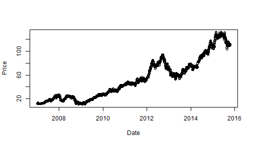

- Using shiny to build interactive web app
- Using quantmod to query stock data
- Shiny app is uploaded to https://lilinvictor.shinyapps.io/StockAnalysis
Victor Li
Select stock code and time window in left panel:
Results are shown interactively in right panel:
output$stockPlot <- renderPlot({
plotStock(stockData())
})
